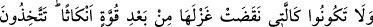
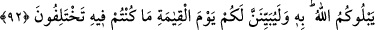
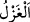
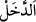

92. Bir toplum diğer bir toplumdan (sayıca ve malca) daha çok olduğu için
yeminlerinizi, aranızda bir fesad aracı edinerek ipliğini sağlamca büktükten sonra
çözüp bozan (kadın) gibi olmayın. Allah, bununla sizi imtihan etmektedir. Hakkında
ihtilafa düşmekte olduğunuz şeyi kıyâmet gününde mutlaka size açıklayacaktır.
Ey mü’minler, ahdi bozma konusunda “Bir toplum diğer bir toplumdan (sayıca ve
malca) daha çok olduğu için” yâni Kureyş topluluğundan olması sebebiyle, mü’minler
topluluğundan sayı ve malca daha çok olduğu için “yeminlerinizi, aranızda bir fesad
aracı edinerek” yâni durumu belirtilecek olan şu kadına benzeyip yeminleri aranızda
bir ifsad ve aldatma vâsıtası yaparak “ipliğini sağlamca büktükten sonra çözüp bozan
(kadın) gibi olmayın.” Burada maksad, ahidlerini bozan kimsenin durumunun bunak
kadının haline benzetilerek bozma işinin çirkinliğinin ortaya konmasıdır. Böylece bir
toplulukla ahidleşen, onlardan daha zengin ve kalabalık bir topluluğu bulunca
ahidleştiği kimseleri bırakıp diğerlerine katılan kimsenin bu yaptığı yasaklanmıştır.
“__WORD__, ipi iki kat yapıp büküp sağlamlaştırmanın zıddı olup bina, ip ve benzeri
şeyleri bozma ve yıkma anlamına gelir. Nitekim el-Kâmûs’ta böyle denilmektedir. Ahdi
bozmak, yükü açmak, yünü didip açmak ya da iplikleri açmak demektir.
“__WORD__ bükülmüş anlamında masdar olup kadının yün ve benzeri şeylerden eğirdiği ip
anlamına gelir.
“__WORD__ bir şeyin aslından olmadığı halde sonradan ona giren şey demektir.
Kelbî ve Mukatil der ki: Bu kadın Rabta binti Sa’d b. Teym olup Kureyşli ve
Mekkeli bir kadındır. Vesveseli ve ahmak bir kadındı. Bir arşın uzunluğunda bir ip
eğirme âleti ve bunun ucuna takılan parmak kadar büyüklükte eğri bir demir ile aynı
büyüklükte bir küre edinmişti. O ve yanında çalışan câriyeleri sabahtan akşama kadar ip
eğirirler, sonra da bu ahmak kadın onlara eğirdikleri bu ipleri çözmelerini emrederdi.
“Allah, bununla” bir topluluğun diğer topluluktan daha çok olmasıyla “sizi imtihan
etmektedir.” Yâni bunu sizin için bir imtihan vesilesi yapıyor. Buna göre, bakalım
Allah’ın ahdi ve Rasûlü (s.a.)’in bey‘ati ile vefa ipine sımsıkı sarılacak mısınız; yoksa
Kureyş’in çokluğuna ve kuvvetli oluşuna, mü’minlerin zâhiren azlığına ve zayıflığına
aldanacak mısınız? Ceylan bir tâne de olsa domuz sürüsünden hayırlıdır. Aslında
çoğunluk (sevadu’l-a‘zam), tek kişi de olsa hak üzere olandır. Deccale ‘Deccal’ adının
verilmesi, tâbîlerinin çokluğu ile yeryüzünü kaplaması sebebiyledir. Bu, onun hak üzere
ve o gün yeryüzünde yaşayanların efdali olmasını gerektirmez. Çünkü Allah, sûret ve
mala değil kalp ve amellere bakar. İnsanlar kalp ve salih amellere sâhip olunca, iyi hal
ve kıymetli malları olsa da olmasa da onlar makbul kişiler olurlar. Aksi halde makbul